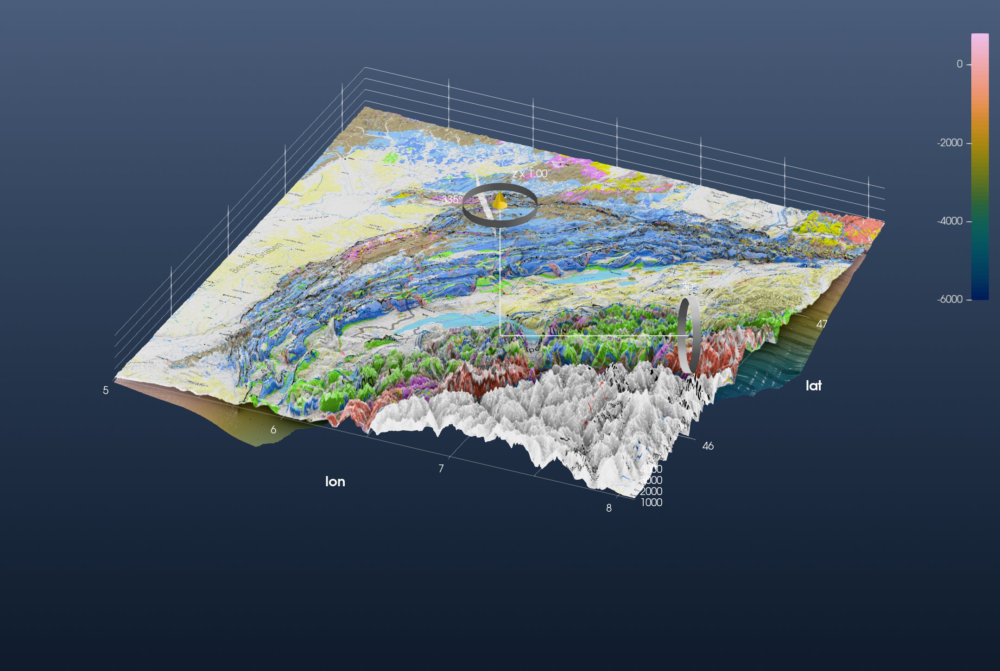
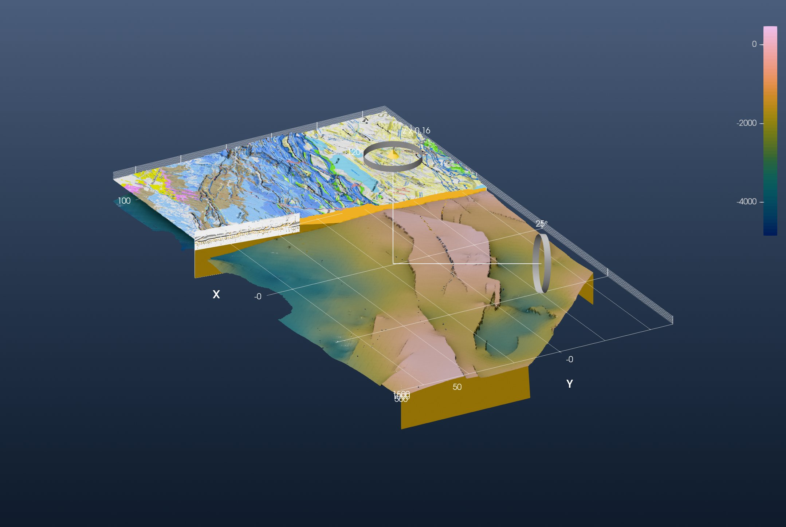

Tutorial: A 3-D Model of the Jura Mountains
This is the GeophysicalModelGenerator.jl tutorial Jura Tutorial redone with iGMT and plain GMT.jl commands: no GMG, no ParaView.
It puts four things in one scene: a geological map draped over the topography, the depth of the basement below it, a geological cross-section, and a block model cut open along that section. The data are Schori's (2020) map and basement surface of the Jura, on Zenodo (10726801).
1. Load the data
The topography is GMT's own 3″ earth relief over the Jura:
using GMT, InteractiveGMT
Topo = grdcut("@earth_relief_03s", region=(5, 8.1, 45.5, 47.7))The geological map is a picture with no coordinates. GMG gives it its corner coordinates with screenshot_to_GeoData. GDAL's -a_ullr does the same: it stamps the picture's upper-left and lower-right corners, in degrees:
z = "https://zenodo.org/records/10726801/files/"
download(z * "SchoriM_Encl_01_Jura-map_A1.png", "SchoriM_Encl_01_Jura-map_A1.png")
Geology = gdaltranslate("SchoriM_Encl_01_Jura-map_A1.png",
"-a_ullr 4.54602510460251 47.781282316442606 8.948117154811715 45.27456049638056 -a_srs EPSG:4326")The basement surface is a GeoTIFF, already in longitude and latitude, with depths in metres:
download(z * "BMes_Spline_longlat.tif", "BMes_Spline_longlat.tif")
Basement = grdcut("BMes_Spline_longlat.tif", region=(5, 8.1, 45.5, 47.7))The cross-section is a picture too:
download(z * "Schori_2020_Ornans-Miserey-v2_whiteBG.png", "Schori_2020_Ornans-Miserey-v2_whiteBG.png")
Section = gmtread("Schori_2020_Ornans-Miserey-v2_whiteBG.png")2. Map, basement and section together
GMG drapes the map on the topography with drape_on_topo. In iGMT that is the drape keyword:
fig = iview(Topo; drape=Geology)The basement is a second grid in the same window. It is the same quantity as the topography, an elevation in metres, so it goes on the same vertical scale (samezscale=true). Adding a grid puts it on display; tick the topography (the Surface row) back on to see both:
add!(fig, Basement; name="Basement", cmap=:batlow, samezscale=true)
setvisible!(fig, "Surface")Every added grid brings its own axes, and one figure has one set, the topography's. Switch the basement's off:
setvisible!(fig, "Axes", false; layer="Basement")A file dropped on the window does the same. Its Scene Objects menu has the scale option as Same vertical scale as …, set automatically when the two grids name the same z unit.
The cross-section hangs as a vertical curtain between its two ends, from 2 km below sea level to 2 km above:
add_curtain!(fig, [5.92507 47.31300; 6.25845 46.99550]; image=Section, zrange=(-2000, 2000))Switch to 3D on the toolbar and turn the view with the gizmo:

This is GMG's first figure. The basement shows at the edges of the block, kilometres under the Molasse basin. The cross-section is the thin wall north-west of the lakes.
3. The block model
GMG projects everything onto a Cartesian grid in kilometres around (6° E, 46.5° N), then rotates it by −43° so that x runs along the Jura and y across it. One PROJ string does both: an oblique Mercator whose central line points along the strike (azimuth 47°). gdalwarp projects the three rasters onto that frame, 220 × 120 km at 100 m spacing:
prj = "+proj=omerc +lat_0=46.5 +lonc=6 +alpha=47 +gamma=90 +k=1 +x_0=-6351600.55 +y_0=0 +units=km +no_off +ellps=WGS84"
box = ["-t_srs", prj, "-te", "-100", "-50", "120", "70", "-tr", "0.1", "0.1", "-r", "bilinear"]
TopoR = gdalwarp(Topo, box)
GeologyR = gdalwarp(Geology, box)
BaseR = gdalwarp(Basement, box)GMG's block runs to x = 180 km. The 3″ topography stops at 8.1° E, so here the block stops at 120 km.
GMG fills the block with two phases, cover (between the surface and the basement) and basement, and cuts it open along the cross-section. The cut is the section's own line, x = 57.5 + 0.1284 (y − 69.97) km in this frame. grdmath removes the topography on the near side of it:
TopoCut = grdmath("? X Y 69.97 SUB 0.1284 MUL 57.5 ADD GE 0 NAN MUL", TopoR)The block's walls are curtains too. A wall's picture is its profile drawn by GMT: grdtrack samples the basement along the wall, plot paints cover over the whole frame and the basement below the profile, and the curtain's clip then cuts its top to the surface above it. The cut face first:
cover = "252/186/28"
basement = "150/115/20"
cutT = grdtrack(BaseR, E="42.4/-49.9/57.8/69.9+i0.2", s=true)
dcut = hypot.(cutT[:, 1] .- 42.4, cutT[:, 2] .+ 49.9)
Lcut = hypot(57.8 - 42.4, 69.9 + 49.9)
plot([0 -8000; Lcut -8000; Lcut 2000; 0 2000; 0 -8000], region=(0, Lcut, -8000, 2000), figsize=(24, 8), fill=cover, frame=:none)
plot!([[0; dcut; Lcut] [-8000; cutT[:, 3]; -8000]], fill=basement, savefig="wall_cut.png")The south face of the block, beyond the cut, the same way:
southT = grdtrack(BaseR, E="42.4/-49.9/119.9/-49.9+i0.2", s=true)
dsouth = southT[:, 1] .- 42.4
Lsouth = 119.9 - 42.4
plot([0 -8000; Lsouth -8000; Lsouth 2000; 0 2000; 0 -8000], region=(0, Lsouth, -8000, 2000), figsize=(24, 8), fill=cover, frame=:none)
plot!([[0; dsouth; Lsouth] [-8000; southT[:, 3]; -8000]], fill=basement, savefig="wall_south.png")Where the cover is removed the walls are basement only, one colour:
slab = mat2img(cat(fill(0x96, 2, 2), fill(0x73, 2, 2), fill(0x14, 2, 2); dims=3))Now the scene: the cut topography with the map, the basement, the walls and the section on the cut. clip=true cuts a wall to the window's own grid (the topography); clip=BaseR cuts it to the basement:
fig = iview(TopoCut; drape=GeologyR)
add!(fig, BaseR; name="Basement", cmap=:batlow, samezscale=true)
setvisible!(fig, "Surface")
setvisible!(fig, "Axes", false; layer="Basement")
add_curtain!(fig, [42.4 -49.9; 57.8 69.9]; image="wall_cut.png", zrange=(-8000, 2000), clip=true)
add_curtain!(fig, [42.4 -49.9; 119.9 -49.9]; image="wall_south.png", zrange=(-8000, 2000), clip=true)
add_curtain!(fig, [-99.9 69.9; -99.9 -49.9; 42.2 -49.9]; image=slab, zrange=(-8000, 2000), clip=BaseR)
add_curtain!(fig, [51.8 26.9; 57.3 69.97]; image=Section, zrange=(-2000, 2000))GMG shows the block at twice its true height. Here x and y are in km and z in metres, and that is a vertical exaggeration of 0.16. View → Vertical Exaggeration… sets it on the topmost grid on display, the basement: set 0.16. Untick Basement, set 0.16 again (now for the topography), and tick Basement back on. Switch to 3D and look at the block from the south-west:

This is GMG's second figure. Beyond the cut, the map lies on the topography over the yellow cover. On the near side the cover is gone, and the basement surface shows its depth, from about 0 m under the folded Jura to −5 km under the Molasse basin. The cross-section stands on the cut face.